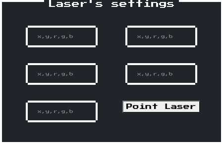
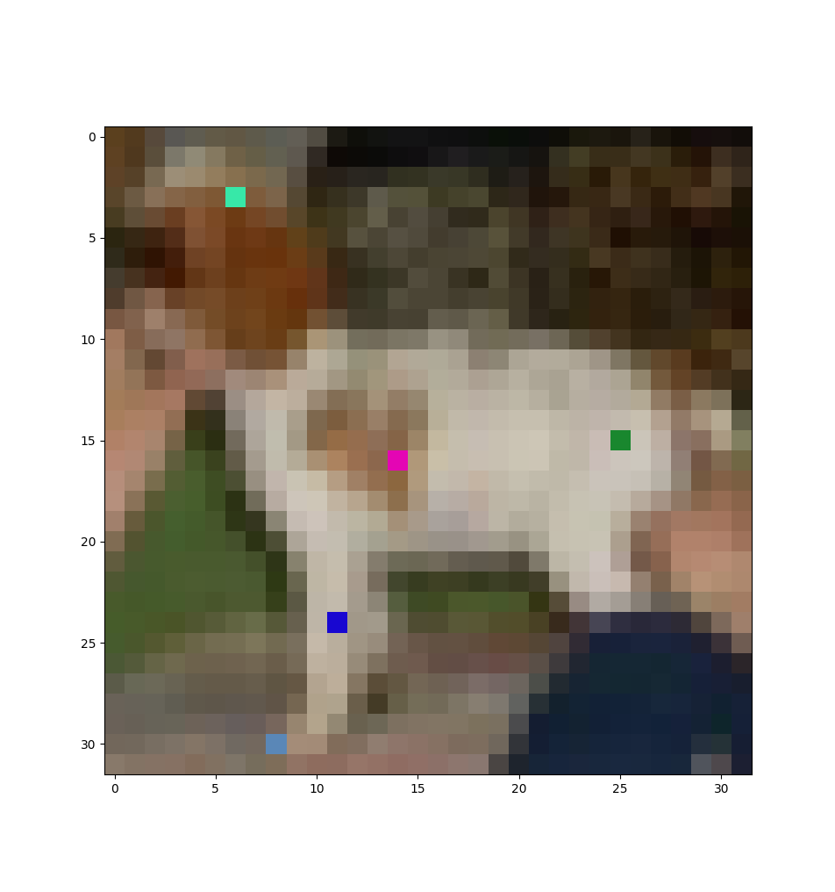

Sigma Technology
On a path to avenging his father, Tex Chance manufactured steam-powered robots to capture all the animals of your island to build a powerful army of fused mutated organisms using his powerful Sigma technology. You can’t let them take away your loyal doggo Julius. The robots have been trained to classify all the objects they encounter using the SigmaNet network. Can you use your laser pointer to change some of the robot’s vision pixels forcing it to misclassify your dog’s image?
Author: shazb0t
Adverserial machine learning
The neural network of the robots is given in
sigmanet.h5. From this, we have to learn how to alter their
vision / image input to misclassify Julius as anything else.
To fool the robots, we point lasers at 5 pixels on their cameras to modify their colors:

Supposedly the decision boundaries of the model are sharp and switching a few pixels can change the decision from a class to another. This is called an “adversarial machine learning” attack.
The input image is 32 by 32:
The robot is 99.99% sure Julius is a dog before the attack:
SIGMA = tf.keras.models.load_model('sigmanet.h5')
julius = tf.image.decode_image(tf.io.read_file('../images/julius.png'), channels=3)
prediction = SIGMA(normalize(julius))
for i in range(len(CLASS_NAMES)):
print(CLASS_NAMES[i], ': ', '{:%}'.format(float(prediction[0][i])))
# airplane : 0.000000%
# automobile : 0.000007%
# bird : 0.000003%
# cat : 0.001755%
# deer : 0.005456%
# dog : 99.986970%
# frog : 0.000631%
# horse : 0.005166%
# ship : 0.000000%
# truck : 0.000000%Where the normalization scales the color channels to roughly
[-2; 2]:
def normalize(img):
__layer = tf.keras.layers.Normalization(axis=-1, mean=MEAN_RGB, variance=STD_RGB**2)
__image = __layer(img)
return __image[None, ...]Adversarial FGSM
Tensorflow has a great tutorial on a technique to fool NN into misclassifying a labrador. Looks like a perfect match!
It generates a perturbation on the original image based on the gradient of a function that represents the distance from the original class:
loss = tf.keras.losses.CategoricalCrossentropy()
def fgsm_pattern(image, index, model=SIGMA):
with tf.GradientTape() as __tape:
__tape.watch(image)
__prediction = model(image)
__loss = loss(index, __prediction)
# Get the gradients of the loss w.r.t to the input image.
return __tape.gradient(__loss, image)
# Get the sign of the gradients to create the perturbation
# return tf.sign(__gradient)This technique generates pixels with maximum intensity everywhere,
thanks to the use of the sign function
tf.sign(__gradient).
But we want to differentiate between the gradient values to find the highest slopes and select the corresponding pixels:
def argmax(a, n):
__a_flat = a.flatten()
__i_flat = __a_flat.argsort()[-n:] # Find the indices in the 1D array
__x, __y = np.unravel_index(__i_flat, a.shape) # convert the 1D indices back into coordinates
return zip(__x, __y) # format as (x, y) tuplesnorm = tf.norm(perturbations[0], axis=-1).numpy() # as numpy array instead of tensor
most_significant_coordinates = list(argmax(norm, 5))
# [(20, 12), (14, 18), (14, 21), (15, 24), (16, 18)]Aaaand it doesn’t work!
interpret(SIGMA(normalize(julius)))
# => predictions for the original image =============
# airplane : 0.000000%
# automobile : 0.000007%
# bird : 0.000003%
# cat : 0.001755%
# deer : 0.005456%
# dog : 99.986970%
# frog : 0.000631%
# horse : 0.005166%
# ship : 0.000000%
# truck : 0.000000%
interpret(SIGMA(normalize(julius) + delta))
# => predictions for the tampered image =============
# airplane : 0.000001%
# automobile : 0.000012%
# bird : 0.000005%
# cat : 0.002182%
# deer : 0.001433%
# dog : 99.979967%
# frog : 0.000273%
# horse : 0.016128%
# ship : 0.000000%
# truck : 0.000001%May-be a single optimisation step is not enough, may-be the pixel values are not relevant? Most likely the pixel selection is wrong!
Sparse adversarial attack / “one pixel attack”
General idea
Rather than generating a complete perturbation image and selecting the most significant pixels a-posteriori, I tried working on 5 pixels from the get-go.
There is a similar attack called the “one pixel attack”, where a population of images are “improved” step by step. Each image has only one pixel differing from the original image. The improvements (worse classification from the NN) are made with a evolution algorithm over a set of images.
“Improving”
What does it mean for an image to be better than the orginal shot of Julius?
The robots will capture any living creature, so we want the NN to classify the image as something inanimate: either an airplane, automobile, ship, or a truck.
Untargeted attack
In the end, we want the confidence for all animals is lower than the confidence for any object. And an image is better if we move in this direction: the total confidence for all animals decreases and the confidence for one object rises.
This transfer in confidence from animal to object can be coded as:
def score(confidence: tf.Tensor) -> float:
return float(
max([confidence[0][__i] for __i in [0, 1, 8, 9]])
- sum([confidence[0][__i] for __i in range(2, 8)]))Where confidence is the output vector of probabilities
given by the NN.
Targeted attack
Actually the previous attack took too long to improve my candidates. Another approach is to specify a target class and aim to improve the confidence in that class only.
For example, if the target class is “automobile” with index 1:
def score(confidence: tf.Tensor) -> float:
return float(
confidence[0][1] # misclassify as a car
- confidence[0][5])Differential evolution
Initiation
So the idea is to start from a random set of perturbations and make those perturbations more and more impactful.
A pertubation is a set of 5 pixels. Each pixel is itself represented by its coordinates and the RGB values:
def _random_pixel(width: int, height: int) -> list:
return [
random.randint(0, width - 1),
random.randint(0, height - 1),
random.randint(0, 255),
random.randint(0, 255),
random.randint(0, 255)]So that a candidate is a matrix of shape 5 x 5:
def random_candidate(width: int, height: int, pixels: int=5) -> np.ndarray:
return np.array(
[_random_pixel(width, height) for _ in range(pixels)])And then the whole population of candidates is simply an array of N candidates:
def random_population(size: int, width: int, height: int, pixels: int=5) -> np.array:
return np.array([
random_candidate(width, height, pixels) for _ in range(size)])Recombination
Each generation of the population is mixed with itself.
There’s CR chance of mixing each candidate with two of
its peers:
def cross(c1: np.ndarray, c2: np.ndarray, c3: np.ndarray, clip: callable, chance: float=0.9, scale: float=0.8) -> np.ndarray:
__p = np.random.rand(*c1.shape) < chance # array of probabilities to cross each gene
return clip(c1 + scale * __p * (c2 - c3))Iterating over the whole population gives:
def recombine(population: np.ndarray, clip: callable) -> np.ndarray:
__next_generation = []
__current_generation = list(population)
for __c in __current_generation:
__c2, __c3 = random.sample(__current_generation, 2)
__next_generation.append(cross(__c1, __c2, __c3, clip, 0.5))
return __next_generationBatch processing
Actually the final implementation has been improved to speed up the processing.
Instead of thinking about individual candidates, the whole population can be processed at once.
These improvements leverage the Numpy arrays calculations, especially broadcasting and slicing.
For example, the initiation of the population can be done in a single function:
def random_population(size: int, pixels: int=5) -> np.array:
return np.random.rand(size, pixels, 5)It returns an array of values between 0 and 1. These are translated to XY and RGB values when appropriate:
def pixels(perturbations: np.ndarray) -> np.ndarray:
return np.multiply(
perturbations,
np.array([32, 32, 256, 256, 256])).astype(int)The recombination is now:
def recombine(population: np.ndarray, cr: float=0.8, f: float=0.5) -> np.ndarray:
__a = np.copy(population)
__b = np.copy(population); np.random.shuffle(__b)
__c = np.copy(population); np.random.shuffle(__c)
__p = np.random.rand(*(population.shape)) < cr # array of probabilities to cross each gene
return (__a + f * __p *(__b - __c)) % 1. # broadcast to all the pixel values at onceAnd on each generation will select the top 30%:
def select(population: np.ndarray, fitness: callable, keep: float=0.3) -> np.ndarray:
__count = int(keep * population.shape[0])
__indices = np.argsort(fitness(population))[-__count:]
return population.take(indices=__indices, axis=0)Finding the most impactful pixels
Targeted attack
The scoring function is now processed on an array of confidence vectors. It is aimed at confusing JULIUS as an airplane, which has the index 0:
def score(confidence: np.ndarray) -> np.ndarray:
return (
confidence.take(indices=[0], axis=-1).max(axis=-1) # misclassify as an airplane
- confidence.take(indices=list(range(2, 8)), axis=-1).sum(axis=-1))DE parameters
We start with 1024 candidate perturbations and make them evolve over 256 generations:
population_i = ev.random_population(size=1024, pixels=5)
population_f = ev.evolve(population=population_i, generations=256, fitness=fitness)DE algorithm
My first try was:
def evolve(population: np.ndarray, generations: int, fitness: callable) -> np.ndarray:
__parents = np.copy(population)
for g in range(generations):
print(g, '...')
__children = recombine(population=__parents, cr=0.8, f=0.5)
__elite = np.concatenate((
select(population=__parents, fitness=fitness, keep=0.3),
select(population=__children, fitness=fitness, keep=0.3)), axis=0)
__foreigners = random_population(size=(population.shape[0] - __elite.shape[0]), pixels=5)
__parents = np.concatenate((__elite, __foreigners), axis=0)
return __parentsBut this algorithm produces only a handful of good candidates. After 512 generations there are only 2 decent candidates:
pprint(list(scores_f.take(indices=np.argsort(scores_f)[-16:])))
# [-0.93692046,
# -0.93692046,
# -0.92820406,
# -0.9142855,
# -0.907587,
# -0.8858199,
# -0.88375163,
# -0.87372494,
# -0.87372494,
# -0.8633161,
# -0.84365475,
# -0.76681167,
# -0.76681167,
# -0.7253104,
# -0.67196494,
# -0.39944702]The elite candidates need to breed more than a single child; in fact they’re the only ones to breed:
def evolve(population: np.ndarray, generations: int, fitness: callable) -> np.ndarray:
__size = population.shape[0]
__parents = np.copy(population)
for g in range(generations):
print(g, '...')
__foreigners = random_population(size=__size, pixels=5)
__elite = np.concatenate((
select(population=__parents, fitness=fitness, keep=0.1),
select(population=__foreigners, fitness=fitness, keep=0.1)), axis=0)
__children = recombine(population=__elite, cr=0.5, f=0.5)
__parents = np.concatenate((
__elite,
__children,
__foreigners.take(indices=list(range(__size - __elite.shape[0] - __children.shape[0])), axis=0)), axis=0)
return __parentsResults
With this new algorithm, after only 128 generations:
confidence = ml.SIGMA.predict_on_batch(ml.normalize(best_images_f))
ml.interpret(confidence[-1])
# airplane : 68.461668%
# automobile : 0.027398%
# bird : 0.192771%
# cat : 4.600941%
# deer : 0.009059%
# dog : 4.343562%
# frog : 2.874114%
# horse : 19.486517%
# ship : 0.000297%
# truck : 0.003671%The best candidate results in an image classified as an airplane, finally!
The perturbation corresponds to these pixel values:
ml.pixels(best_candidates_f[-1])
# array([[ 15, 25, 25, 135, 46],
# [ 16, 14, 228, 5, 180],
# [ 3, 6, 55, 232, 168],
# [ 24, 11, 24, 7, 209],
# [ 30, 8, 90, 135, 183]])The top candidates are all close:
ml.pixels(best_candidates_f[-2])
# array([[ 15, 25, 92, 12, 197],
# [ 14, 7, 228, 13, 78],
# [ 2, 6, 47, 57, 149],
# [ 24, 11, 35, 7, 128],
# [ 22, 10, 88, 116, 140]])
ml.pixels(best_candidates_f[-3])
# array([[ 16, 25, 44, 141, 29],
# [ 16, 14, 228, 5, 202],
# [ 3, 6, 52, 232, 200],
# [ 24, 11, 13, 7, 209],
# [ 30, 6, 31, 188, 183]])This is an airplane:

HTB{0ne_tw0_thr33_f0ur_f1v3_p1xel_attack}